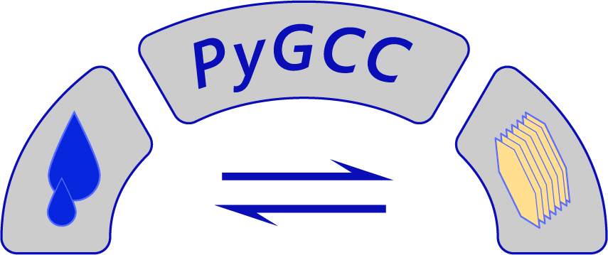

pygcc

A tool for thermodynamic calculations and geochemical database generation

pyGeochemCalc (pygcc) is a python-based program for thermodynamic calculations and producing the Geochemist’s Workbench (GWB), EQ3/6, TOUGHREACT, and PFLOTRAN thermodynamic database from ambient to deep Earth temperature and pressure conditions
pygcc is developed for use in the geochemical community by providing a consolidated set of existing and newly implemented functions for calculating the thermodynamic properties of gas, aqueous, and mineral (including solid solutions and variable-formula clays) species, as well as reactions amongst these species, over a broad range of temperature and pressure conditions, but is also well suited to being modularly introduced into other modeling tools as desired. The documentation is continually evolving, and more examples and tutorials will gradually be added (feel free to request features or examples; see Contributing below).
Installation


$ pip install pygcc
Examples
Check out the documentation for galleries of examples General Usage,
Integration with GWB and Integration with EQ3/6.
If you would prefer to flip through notebooks on Bitbucket, these same examples can be found in the folder docs/.
Contributing
Interested in contributing? Check out the contributing guidelines. Please note that this project is released with a Code of Conduct. By contributing to this project, you agree to abide by its terms. For more information, see the documentation, particularly the Contributing page and Code of Conduct.
License
pygcc was created by Adedapo Awolayo and Benjamin Tutolo. It is licensed under the terms of the GNU General Public License v3.0 license.
Citation
If you use pygcc for your research, citation of the software would be appreciated. It helps to quantify the impact of pygcc, and build the pygcc community. For information on citing pygcc, see the relevant docs page
Credits
pygcc was created with cookiecutter and the py-pkgs-cookiecutter template.